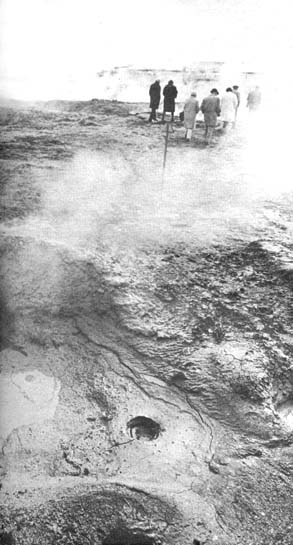

It may look like a vision from Dante but this scene has to do with living. The Nature Cure Sanatorium near Hverigerdi in Iceland dips into these holes for the most important ingredient in its famous mud baths.